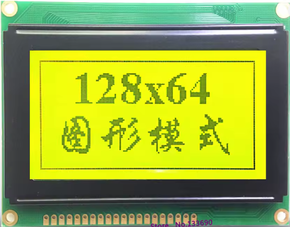
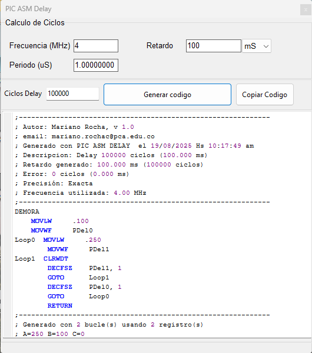

Controlando un GLCD GDM12864-5con controlador ST7920 usando CCS C y PIC18F25K22
- Pantalla: GLCD GDM12864-5 (128x64 píxeles, monocromo)
- Controlador: ST7920 en modo paralelo 8 bits
- Microcontrolador: PIC18F25K22
- Lenguaje: CCS C Compiler
- Driver: Inicialización en modo básico y gráfico
- Funciones: Dibujar píxeles, rellenar pantalla, framebuffer, texto y gráficos
- Ventaja: Double buffer para evitar parpadeo y mejorar rendimiento
- Aplicaciones: Interfaces gráficas, menús, instrumentación, logotipos

Este driver probado físicamente permite un control completo del GLCD, integrando gráficos y texto en proyectos embebidos de forma eficiente.
🕒 Generador de Retardos en ASM para PIC
- Entrada de frecuencia en MHz
- Retardo deseado en milisegundos
- Cálculo automático de ciclos y generación de código ASM
- Precisión exacta (sin error de ciclos)
- Compatible con bucles dobles y registros estándar
¿Todavía programas tus PIC en ensamblador como en los buenos tiempos? Entonces este generador de retardos es para ti. 🎯
Con esta herramienta puedes calcular fácilmente los ciclos necesarios para generar retardos precisos en milisegundos, usando bucles anidados y registros disponibles en los microcontroladores PIC. Solo ingresas la frecuencia del reloj, el tiempo deseado, ¡y listo! Obtienes el código ASM listo para copiar y pegar en tu proyecto.
🔧 Características principales
📷 Ejemplo de uso

El código generado es:
;--------------------------------------------------------------
; Generado con PIC ASM DELAY el 19/08/2025 Hs 10:10:45 am
; Descripcion: Delay 100000 ciclos (100.000 ms)
; Retardo generado: 100.000 ms (100000 ciclos)
; Error: 0 ciclos (0.000 ms)
; Precision: Exacta
; Frecuencia utilizada: 4.00 MHz
;--------------------------------------------------------------
DEMORA
MOVLW .100
MOVWF pDel0
Loop0 MOVLW .250
MOVWF pDel1
Loop1 CLRWDT
DECFSZ pDel1, 1
GOTO Loop1
DECFSZ pDel0, 1
GOTO Loop0
RETURN
Este retardo se genera con 2 bucles y 2 registros, usando valores A=250 y B=100. Ideal para temporizaciones simples sin usar periféricos.
💡 ¿Por qué usarlo?
Porque a veces lo clásico funciona mejor. Este generador te ahorra tiempo, evita cálculos manuales y te permite mantener el control total sobre tu código ASM. Perfecto para proyectos educativos, sistemas embebidos simples o cuando quieres evitar dependencias externas.
¡Espero que te sea útil! Si tienes sugerencias o mejoras, no dudes en abrir un issue o contribuir al repositorio. 👨🔧👩🔧
Este driver probado físicamente permite un control completo del GLCD, integrando gráficos y texto en proyectos embebidos de forma eficiente.